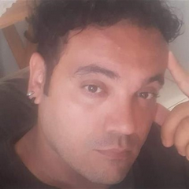

Sobre Mim
Olá! Meu nome é Danilo Fernando Bandeira, sou apaixonado por minha familia . Neste perfil, compartilho um pouco sobre minha vida, experiências e conhecimentos.
Familia
“Família é um porto seguro, um laço de amor inigualável que nos une. É um vínculo construído não apenas por sangue, mas também por amor, respeito e cuidado mútuo. Família é onde aprendemos os primeiros passos do amor, onde somos amados incondicionalmente, apesar de nossas falhas e imperfeições. É um amor que não se mede, não se compara e não se limita. Família é o amor em sua forma mais pura e eterna.”
Projeto social
Manutenção de Computadores no SOMA
Em um projeto colaborativo com uma equipe de 10 pessoas, dedicamo-nos à manutenção corretiva de computadores na instituição SOMA, localizada em Americana, SP. Nosso objetivo era assegurar a continuidade do treinamento de 72 adolescentes, equipando-os com as ferramentas necessárias para o sucesso.
Enfrentamos o desafio de restaurar 44 computadores que eram vitais para o aprendizado e desenvolvimento dos jovens no programa.
Solução:
Corrigimos falhas críticas em 8 computadores, permitindo que retomassem suas funções essenciais.
Realizamos ajustes em outros 36 computadores, prevenindo problemas futuros e garantindo sua operacionalidade.
Além disso, realizamos uma limpeza minuciosa em todos os componentes internos e substituímos a pasta térmica nos processadores, garantindo que os computadores funcionassem com eficiência e evitando superaquecimento.
Asseguramos que os adolescentes pudessem continuar seu treinamento sem interrupções, mantendo um ambiente de aprendizado tecnológico ativo.
Com os computadores funcionando perfeitamente, os alunos puderam se concentrar em adquirir habilidades valiosas para o futuro.
“Este projeto não foi apenas sobre reparar máquinas; foi sobre construir pontes para o futuro dos nossos jovens. Cada computador que consertamos é uma porta que se abre para novas possibilidades.” - Danilo Fernando Bandeira
Através deste projeto, reforçamos a importância da tecnologia na educação e no empoderamento juvenil. Estamos orgulhosos de ter contribuído para um futuro mais brilhante para os adolescentes do SOMA.
Convido você a se juntar a nós em futuras iniciativas ou a apoiar nosso contínuo esforço para fazer a diferença na comunidade.
Habilidades
-
Sou um indivíduo que valoriza profundamente algumas habilidades que considero cruciais para navegar na vida e contribuir de maneira significativa para a sociedade.
Primeiramente, acredito que a empatia e a comunicação são fundamentais em todos os aspectos da vida. Tenho um forte compromisso em entender as perspectivas dos outros e estabelecer conexões genuínas através da comunicação eficaz. A capacidade de expressar minhas ideias com clareza e ouvir atentamente as dos outros é algo que valorizo e busco desenvolver continuamente.
Além disso, sempre me esforço para ser resiliente e encontrar soluções para os desafios que surgem em meu caminho. Encaro as adversidades como oportunidades de crescimento e aprendizado, e estou sempre pronto para enfrentar novos desafios com determinação e coragem.
Por fim, integridade e ética são princípios que guiam minhas ações e decisões. Acredito firmemente na importância de agir com honestidade, confiabilidade e respeito pelos outros. Esses valores são fundamentais para construir relacionamentos sólidos e contribuir para um ambiente de trabalho e uma comunidade mais saudáveis.
Em resumo, sou alguém que valoriza a empatia, a resiliência e a integridade, e estou comprometido em cultivar essas habilidades em minha jornada pessoal e profissional.
Experiências
-
INDÚSTRIA E COMÉRCIO AJINOMOTO DO BRASIL ALIMENTOS LTDA.
- CNPJ: 46.344.034/0005-68
- Período Trabalhado: 02/03/2015
- Endereço completo: ROD ANHANGUERA S/N KM 131/SP
- Ocupação / Atividade Principal: ALIMENTADOR DE LINHA
-
TEXTIL CANATIBA LTDA
- CNPJ: 56.723.091/0001-48
- Período Trabalhado: 15/03/2017
- Endereço completo: AVENIDA INTERDISTRIAL COMENDADOR EMILIO ROMI, 350 CEP 13456-901 CIDADE INDUSTRIAL SANTA BARBARA D OESTE/SP
- Ocupação/ Atividade Principal: CONFERENTE
“Eu gostaria de compartilhar algumas das minhas experiências profissionais que moldaram minha carreira e me ajudaram a desenvolver minhas habilidades.
Contato
Fique à vontade para entrar em contato comigo através do seguinte e-mail:
dani.bandeirahe@hotmail.com